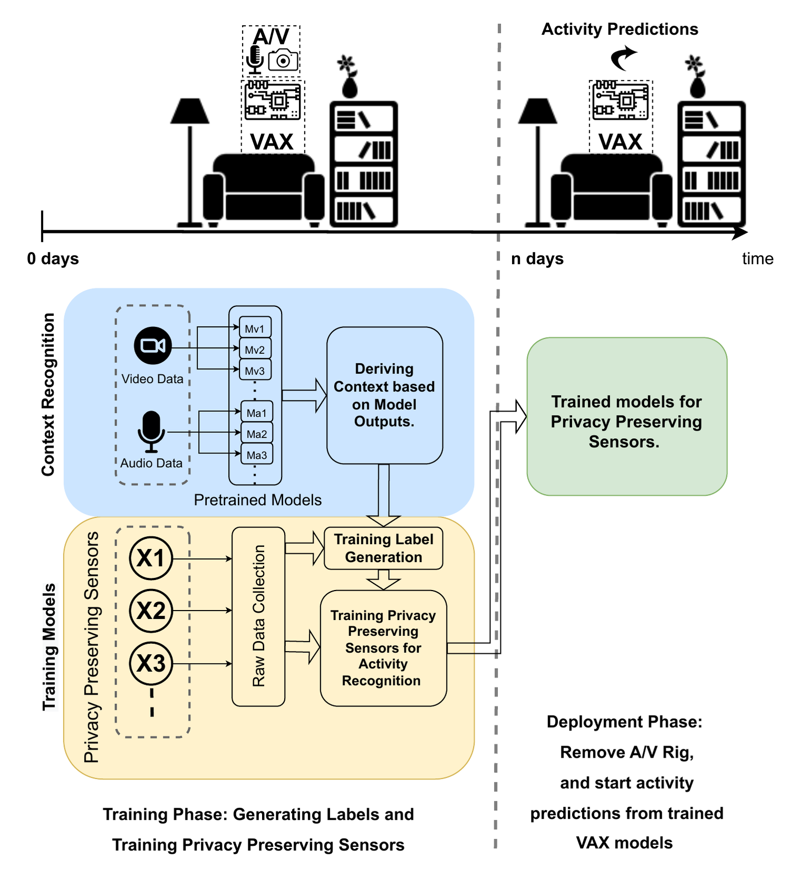
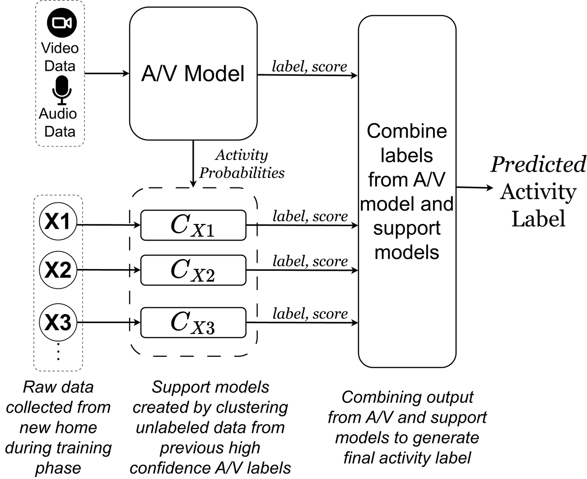
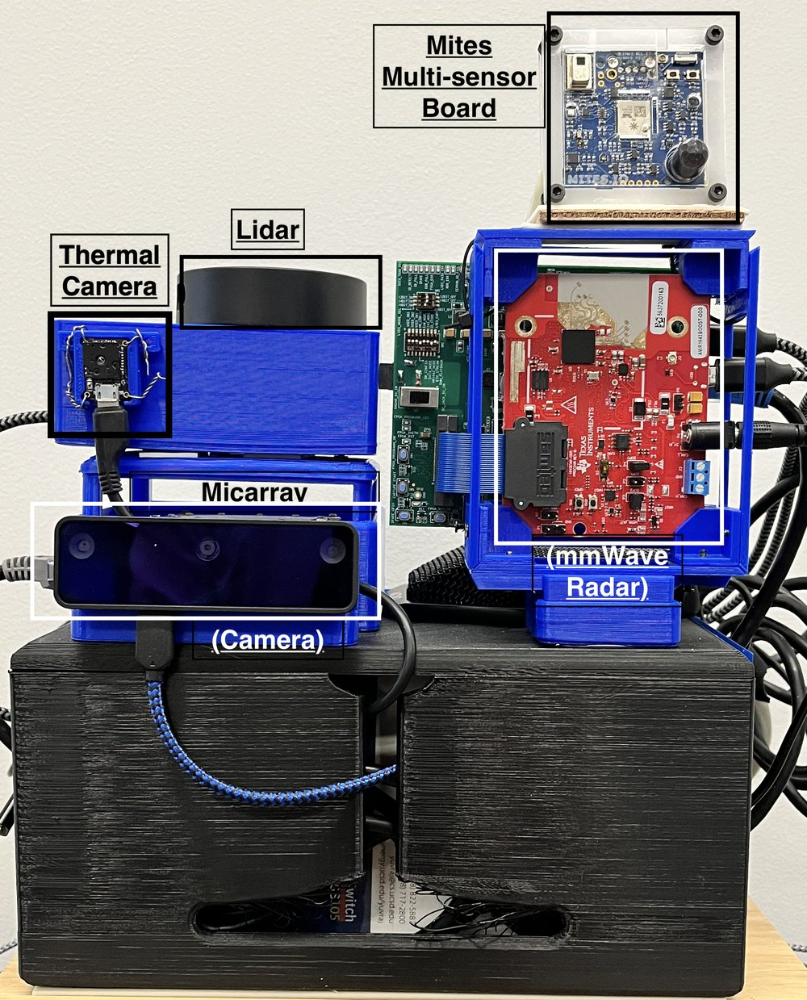
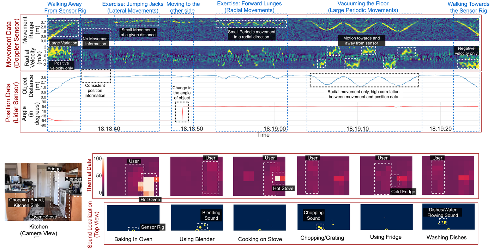
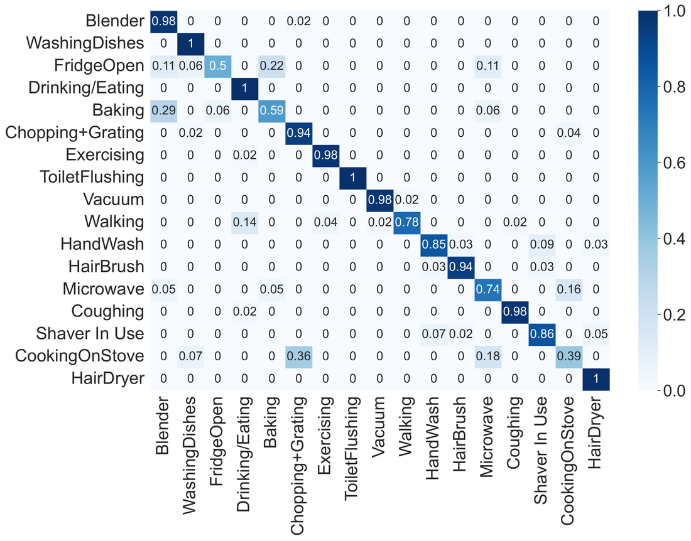
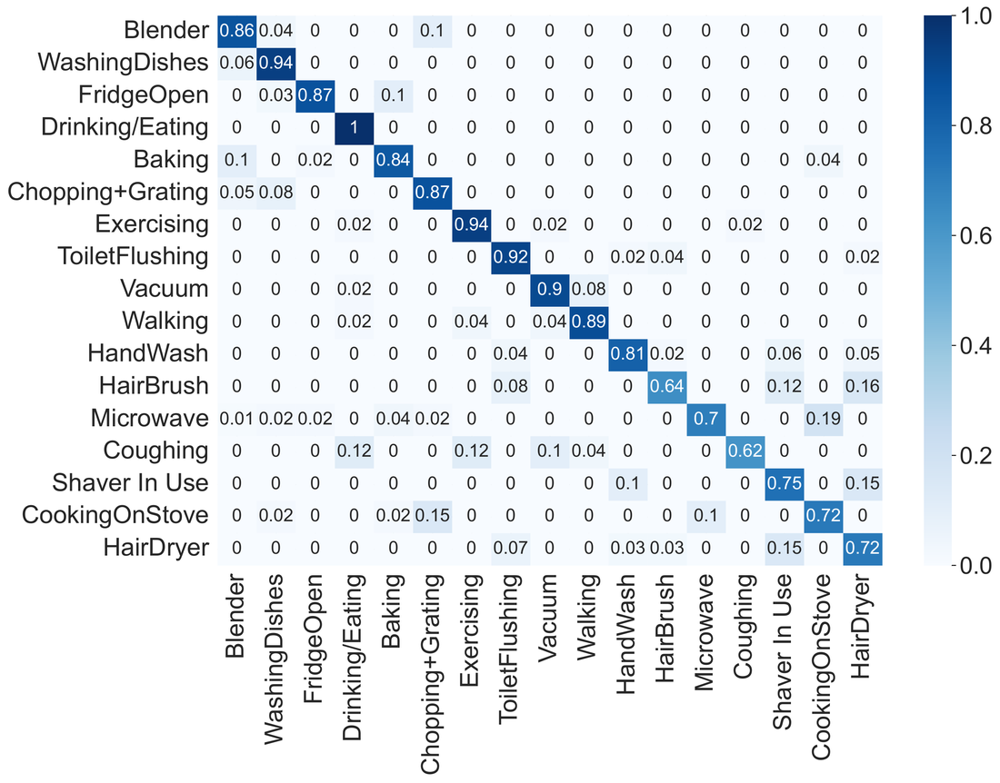

VAX uses training labels acquired from existing video and audio models to train models for a wide range of privacy-sensitive sensors. Once these models are trained, the audio and video sensors can be removed altogether to better protect the user’s privacy.
Carnegie Mellon University
Proc. ACM IMWUT 2023 · Vol. 7, No. 3, Article 117 · UbiComp 2023

Use existing audio and video models to label activities, then train privacy-sensitive sensors and remove the camera and microphone.
The use of audio and video for Human Activity Recognition (HAR) is common, given the richness of the data and the availability of pre-trained ML models. However, audio and video sensors also lead to significant consumer privacy concerns. Researchers have thus explored less privacy-invasive modalities such as mmWave Doppler radars, IMUs, and motion sensors. The key limitation of these approaches is that most of them do not readily generalize across environments and require significant in-situ training data.
VAX (Video/Audio to ‘X’) generalizes cross-modality transfer learning: training labels acquired from existing Video/Audio ML models are used to train models for a wide range of privacy-sensitive ‘X’ sensors, with little to no user involvement. Once the models for the privacy-sensitive sensors are trained, the audio and video sensors can be removed altogether to protect the user’s privacy better.
Detects ~15 of 17 daily activities from an onboard camera & mic, trained leave-one-home-out across 10 homes.
Per-home models on the ‘X’ sensors reach 84% across all 17 activities with just ~2 labels/home of user input.
~2 labels/home versus 17 for a supervised baseline, at equal or better accuracy (84% vs. 79%).
The use of audio and video modalities for Human Activity Recognition (HAR) is common, given the richness of the data and the availability of pre-trained ML models using a large corpus of labeled training data. However, audio and video sensors also lead to significant consumer privacy concerns. Researchers have thus explored alternate modalities that are less privacy-invasive such as mmWave doppler radars, IMUs, motion sensors. However, the key limitation of these approaches is that most of them do not readily generalize across environments and require significant in-situ training data. Recent work has proposed cross-modality transfer learning approaches to alleviate the lack of trained labeled data with some success. In this paper, we generalize this concept to create a novel system called VAX (Video/Audio to ‘X’), where training labels acquired from existing Video/Audio ML models are used to train ML models for a wide range of ‘X’ privacy-sensitive sensors. Notably, in VAX, once the ML models for the privacy-sensitive sensors are trained, with little to no user involvement, the Audio/Video sensors can be removed altogether to protect the user’s privacy better. We built and deployed VAX in ten participants’ homes while they performed 17 common activities of daily living. Our evaluation results show that after training, VAX can use its onboard camera and microphone to detect approximately 15 out of 17 activities with an average accuracy of 90%. For these activities that can be detected using a camera and a microphone, VAX trains a per-home model for the privacy-preserving sensors. These models (average accuracy = 84%) require no in-situ user input. In addition, when VAX is augmented with just one labeled instance for the activities not detected by the VAX A/V pipeline (~2 out of 17), it can detect all 17 activities with an average accuracy of 84%. Our results show that VAX is significantly better than a baseline supervised-learning approach of using one labeled instance per activity in each home (average accuracy of 79%) since VAX reduces the user burden of providing activity labels by 8x (~2 labels vs. 17 labels).
Two phases: bootstrap with audio and video, then run on the privacy-sensitive sensors alone.
1 · A/V pipeline. Existing off-the-shelf audio and video models are individually noisy (native accuracy is less than 75-80%), and they are not uniformly accurate across all activities. VAX bootstraps an ensemble of these models with a small amount of labeled data from a set of reference homes, and uses confidence cutoffs to emit a label only when the ensemble is confident. About 75% of activity instances meet these cutoffs and are labeled by the A/V pipeline; the rest are left Undetected.
2 · Support models and fusion. For the remaining instances, VAX clusters the unlabeled privacy-sensitive sensor data using the high-confidence A/V labels to build per-sensor support models. It then combines the A/V predictions with the support-model outputs to assign a final activity label. This increases the detection rate and reduces the impact of erroneous labels from the A/V models.
3 · Train ‘X’, then remove A/V. The resulting labels train per-home models for the privacy-sensitive sensors. Once these models are trained, the camera and microphone are removed, and the ‘X’ sensors perform activity recognition on their own.

VAX’s hardware rig pairs a Yeti microphone and a 720p Logitech webcam (used only during bootstrapping) with a suite of ambient, privacy-preserving sensors:
TI AWR1642 with DCA1000, range-Doppler heatmaps of motion at 15 Hz.
RPLIDAR A1M8, 360° 2-D object distance and position in the sensor plane.
FLIR Lepton 3.5 down-sampled to 10x8, heat signatures with no PII.
ReSpeaker 4-mic array, direction and intensity of sound rather than full audio.
Mites.io IMU, structure-borne vibration from appliances and movement.
Mites.io: temperature, humidity, pressure, light, color, and PIR motion.


10 homes · 17 activities · ~10 hours of multi-sensor data.


Three independent modules: data collection, A/V labels, and VAX training.
generate_av_labels/av_ensemble.pb) for the activities in the paper. You can build in-situ models for the privacy-sensitive sensors in a new home directly, without re-training on the reference homes, unless you need to add new activities.
All three modules live in one repo; each has its own README under data_collection/, generate_av_labels/, and vax_training/.
Collect synchronized multi-sensor data with real-time ground-truth annotation, then preprocess raw streams into per-activity instances. (Also usable standalone for any multi-modal sensing task.)
Run the off-the-shelf A/V ensemble (OpenMMLab MMAction2 / MMPose / MMDetection) over each instance’s camera.mp4 to produce final_av_labels.csv.
Feed the A/V labels and featurized ‘X’-sensor data into the VAX pipeline (leave-one-instance-out CV) to train per-home privacy-sensitive models.
# Tested on Ubuntu 22.04, Python 3.8 (conda recommended)
git clone https://github.com/synergylabs/vax.git
cd vax
# 1) Generate A/V labels from instance videos
conda create --name vax_av_labels python=3.8 -y
conda activate vax_av_labels
pip install torch==1.13.1 torchvision==0.14.1 torchaudio==0.13.1
pip install -U openmim
mim install -U mmcv-full==1.7.0 mmdet==2.28.2 mmengine==0.7.2 mmpose==0.29.0
cd generate_av_labels && pip install -r requirements.txt
python generate_av_labels.py # -> cache/.../final_av_labels.csv
# 2) Train privacy-sensitive sensor models from those labels
cd ../vax_training
conda create --name vax_training python=3.8 -y && conda activate vax_training
pip install -r requirements.txt
python vax_training_loocv.py # -> per-instance predictions per sensor/classifierEdit the run_config / train_config blocks at the top of generate_av_labels.py and vax_training_loocv.py to point at your data and activity set. See each module’s README for the full configuration and expected outputs.
@article{patidar2023vax,
author = {Patidar, Prasoon and Goel, Mayank and Agarwal, Yuvraj},
title = {VAX: Using Existing Video and Audio-based Activity Recognition
Models to Bootstrap Privacy-Sensitive Sensors},
journal = {Proceedings of the ACM on Interactive, Mobile, Wearable
and Ubiquitous Technologies (IMWUT)},
year = {2023},
volume = {7},
number = {3},
articleno = {117},
numpages = {24},
month = {sep},
publisher = {Association for Computing Machinery},
doi = {10.1145/3610907},
keywords = {ubiquitous sensing, privacy first design, human activity recognition}
}BSD 3-Clause
The VAX source code is released under the BSD 3-Clause License. You may use, modify, and redistribute it with attribution. See LICENSE.
CC BY 4.0
Figures and text reproduced on this page are © 2023 the authors, available under CC BY 4.0. The published article is open-access via the ACM DOI.
This work was conducted at the Synergy Labs, Carnegie Mellon University. We thank our study participants and the maintainers of the OpenMMLab toolkits (MMAction2, MMPose, MMDetection) on which the A/V pipeline is built.